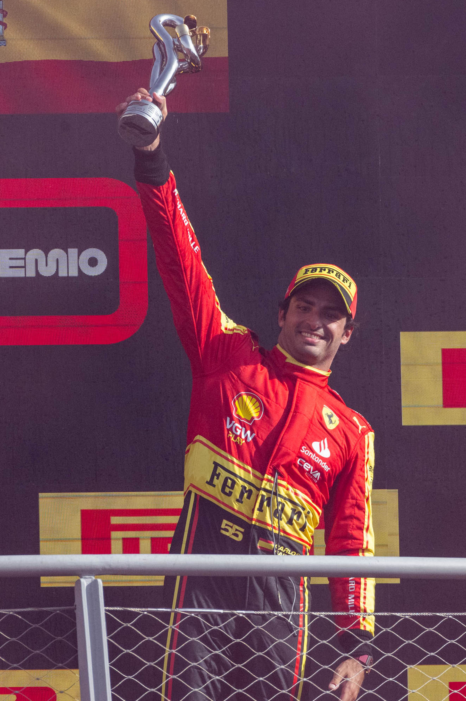
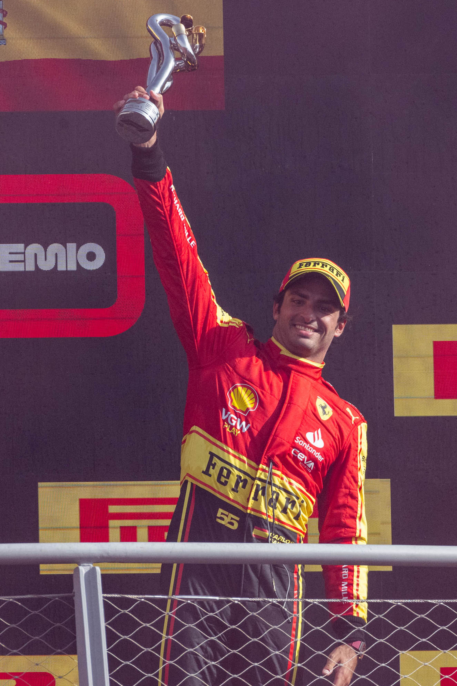

Formula One, commonly abbreviated as F1, is the highest class of international racing for open-wheel single-seater formula racing cars sanctioned by the Fédération Internationale de l'Automobile (FIA). The FIA Formula One World Championship has been one of the world's premier forms of motorsport since its inaugural running in 1950 and is often considered to be the pinnacle of motorsport. The word formula in the name refers to the set of rules all participants' cars must follow. A Formula One season consists of a series of races, known as Grand Prix.
Grands Prix take place in multiple countries and continents on either purpose-built circuits or
closed roads.A point-system is used at Grands Prix to determine two annual World Championships: one
for the
drivers , and one for the constructors —now synonymous with teams. Each driver must hold a
valid Super Licence,
the highest class
of racing licence the FIA issues, and the races must be held on Grade One tracks, the highest grade rating the
FIA issues for tracks.
Formula One cars are the
world's fastest regulated road-course racing cars, owing to high cornering speeds
achieved by generating large amounts of aerodynamic downforce, much of which is generated by front and rear
wings, as well as underbody tunnels. The cars depend on electronics, aerodynamics, suspension and tyres.
Traction control, launch control, automatic shifting, and other electronic driving aids were first banned in
1994. They were briefly reintroduced in 2001, and have more recently been banned since 2004 and 2008,
respectively.
With the average annual cost of running a team—designing, building, and maintaining cars, pay, transport—at approximately £220 million, Formula One's financial and political battles are widely reported. The Formula One Group is owned by Liberty Media, which acquired it in 2017 from private-equity firm CVC Capital Partners for US$8 billion.
 

Carlos Sainz Vázquez de Castro ; (born 1 September 1994) is a Spanish racing driver, who is contracted to compete in Formula One for Williams. Sainz has won four Formula One Grands Prix across 10 seasons. Born in Madrid, Sainz is the son of two-time World Rally Champion Carlos Sainz. Graduating from karting to junior formulae in 2010, Sainz won his first championship at the Formula Renault NEC in 2011 with Koiranen, finishing runner-up to Robin Frijns in the Eurocup that year. In 2012, Sainz contested British Formula 3, the Formula 3 Euro Series and FIA European Formula 3 with Carlin. Sainz progressed to the GP3 Series with Arden in 2013, finishing tenth in his rookie season. He then found success in the Formula Renault 3.5 Series, winning the championship in 2014 with DAMS.
A member of the Red Bull Junior Team since 2010, Sainz signed with Toro Rosso in 2015, debuting alongside Max Verstappen . He remained at Toro Rosso until the 2017 United States Grand Prix, where he replaced Jolyon Palmer at Renault, having already signed with the team from 2018 onwards. Sainz moved to McLaren in 2019, ending his association with Red Bull. He took his maiden podium at the Brazilian Grand Prix that year, followed by another at the Italian Grand Prix in 2020. Sainz signed for Ferrari in 2021, replacing Sebastian Vettel to partner Charles Leclerc. After a winless debut season for Ferrari, Sainz took his maiden pole position and win at the British Grand Prix in 2022. He took further wins for Ferrari at Singapore in 2023, as well as Australia and Mexico City in 2024. Replaced by Lewis Hamilton for 2025, Sainz joined Williams to partner Alexander Albon.
As of the 2024 Abu Dhabi Grand Prix, Sainz has achieved four race wins, six pole positions, four fastest laps and 27 podiums in Formula One. Sainz is contracted to remain at Williams until at least the end of the 2026 season.
Carlos Sainz was born on 1 September 1994 in Madrid, Spain, to father Carlos Sainz and his wife Reyes Vázquez de Castro. His father is a rally driver, who won the World Rally Championship twice in 1990 and 1992, with 26 rally victories. Eventually, as Sainz Jr. got older, his father mentored him throughout his journey which led to him getting in to F1 racing.
| Team | Driver |
|---|---|
| Williams Racing | Carlos Sainz, Alexander Albon |
| Ferrari | Charles Leclerc, Lewis Hamilton |
| Redbull Racing | Max Verstappen , Liam Lawson |
| McLaren | Lando Norris, Oscar Piastri |
| Mercedes-AMG Petronas | Andrea Kimi Antonelli, George Russell |
| Alpine F1 Team | Jack Doohan, Pierre Gasly |
| Aston Martin Aramco | Fernando Alonso , Lance Stroll |
| Haas F1 Team | Esteban Ocon, Oliver Bearman |
| Stake F1 Team Kick Sauber | Gabriel Bortoleto, Nico Hülkenberg |
| Visa Cash App Racing Bulls | Isack Hadjar, Yuki Tsunoda |